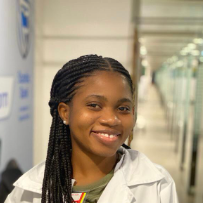

Genetics & Genomics
Identifying disease-associated variants such as APOL1 and GSTM1 to understand population-specific risk.
Biomedical scientist / Genomics & precision medicine
I trace the genetic roots of kidney disease, diabetes and cancer — then turn the evidence into earlier diagnosis and better treatment for African patients.

01 — About
I am a biomedical scientist with extensive research experience and a deep passion for understanding the non-communicable diseases that affect our communities — chronic kidney disease, diabetes and cancer.
My work sits where genetics, transcriptomics, proteomics and epigenetics meet. I investigate how molecular mechanisms drive disease, and how those discoveries can be translated into meaningful diagnosis and treatment. I believe the future of medicine is data-driven — and that African populations must be part of it.
I am committed to advancing genomics research and precision medicine through a PhD program that bridges basic science and clinical application, pairing wet-lab rigour with computational and machine-learning approaches.
Advancing genomics research and precision medicine — bridging basic science and clinical application.
02 — Research focus
I combine layered biological data with computational tools to see the full picture of disease — from gene to population.
Identifying disease-associated variants such as APOL1 and GSTM1 to understand population-specific risk.
Comparing gene-expression signatures across cancers and disease states to uncover driving mechanisms.
Profiling protein changes to reveal the functional molecules behind disease progression and drug response.
Exploring heritable, non-sequence changes that switch genes on and off in health and disease.
Building frameworks to predict disease severity and discover gene signatures from complex biological data.
Translating genomic insight into targeted diagnosis and treatment tailored to African populations.
03 — Experience
Noguchi Memorial Institute for Medical Research · Department of Clinical Pathology · H3Africa CKD Project
National COVID-19 Testing Laboratory · Noguchi Memorial Institute for Medical Research
Clinical Pathology Department · Noguchi Memorial Institute for Medical Research
Volta Regional Hospital · Ho, Ghana
04 — Education
Medical Biochemistry
University of Ghana, Legon · Accra
Thesis Evaluating the effects of variants of APOL1 and GSTM1 genes in diabetic kidney disease patients in Ghana and Nigeria.
Biochemistry, Cell & Molecular Biology
University of Ghana, Legon · Accra
Thesis Antioxidant and anti-diabetic effects of combined aqueous extracts of Croton membranaceus and Mangifera indica on streptozotocin-induced diabetic rats.
05 — Publications & presentations
Miriam E.L Gakpey, Solomon E. Quayson, Afua D. Abrahams, Dorothy Yeboah-Manu, Kwabena O. Danquah · ASTMH Conference, Toronto, Canada
Miriam E.L Gakpey, Sarkaft G. Omer, Onaho Pascal, Vincent U. Gmayinaam · African Society for Bioinformatics Codeathon Conference
Jonathan Kalami, Miriam E.L Gakpey, Benson R. Kidenya, et al. · Noguchi Memorial Institute for Medical Research Conference, Accra
Miriam E.L Gakpey, Shadrack A. Aidoo, Toheeb A. Jumah, et al. · ISCB Bioinformatics Conference, South Africa
Miriam E.L Gakpey, Mona-Liza E. Sakyi, Nana Yaa K. Agyemang, et al. · 64th McKusick Short Course, Jackson Laboratory, USA
06 — Project repositories
Open research repositories from bioinformatics codeathons and computational biology projects.
07 — Skills
08 — Training & conferences
09 — Awards & grants
African Bioinformatics Institute travel grant — International Society for Computational Biology and Bioinformatics
Reviewer's Choice abstract recognition — American Society for Human Genetics Conference
Resource-Limited Country travel grant — American Society for Human Genetics Conference
3rd Place Award — African Society for Computational Biology and Bioinformatics Codeathon
Polygenic risk scores training travel grant — Wellcome Connecting Science
Howard Hughes Medical Institute Travel Scholarship — 64th McKusick Short Course, Jackson Laboratory
2nd Best Poster Presentation — 64th McKusick Short Course, Jackson Laboratory
Master's Research Scholarship — West African Genetic Medicine Centre
10 — Get in touch
For collaborations, research opportunities, or a conversation about genomics and precision medicine in Africa — I would be glad to hear from you.